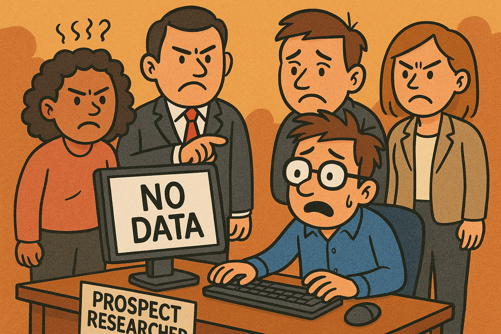

AI for All Sizes in Nonprofits: How Prospect Researchers Can Lead the Way
Whether you're hosting a neighborhood ice cream social for 20 or orchestrating a gala with over 300 guests, the size of your nonprofit event doesn't limit the value of the data you can collect. As a prospect researcher, I’ve seen firsthand how even the smallest engagement can uncover powerful donor insights when supported by the right tools.
A Real-World Example: Ice Cream Social Insights
Back when I served as an AmeriCorps VISTA, I hosted a simple ice cream social—an event with no more than 20 people. We used a basic attendee sign-in sheet and sent out a post-event survey afterward. That modest step ended up making a major difference. We were able to show real engagement and gather feedback that directly supported new, sustainable funding. Because we captured the data and showed the impact, the event received funding again the following year. Small event, big result.
Why Event Data Matters
Every RSVP, name tag, attendee form, and survey response is a building block. Prospect researchers thrive when we have access to consistent, well-structured data from events. By tracking who shows up, and how often, we start to surface patterns that reveal hidden capacity, philanthropic interests, and paths to deeper engagement. Some think of only tracking quantitative data, but qualitative data can be as important. Follow-up after an event and invite feedback, because that encourages future engagement.
AI Helps, No Matter Your Size
AI is not just for big budgets or large development teams. With today’s tools, small to mid-sized nonprofits can use AI to analyze event data, tag attendee behavior in CRMs, and even predict which guests are likely to become major donors. It doesn’t replace our instincts or judgment. It sharpens them. Even when you do not have a computer or/and spreadsheet access, take a picture of your sign-in sheet. Smartphones today can convert letters and numbers on a photo to text. That’s only the start! Explore, be curious!
Start Here — Three Ways to Use AI Now
- ✔️ E-Newsletters: personalize, summarize, and engage with stakeholders.
- ✔️ Data Collection: gather what truly matters from attendees and donors (like name, employer, email, mission connection, volunteer interest).
- ✔️ Relationship Building: identify and support meaningful, mission-aligned connections—without losing the human touch.
From Transactional to Transformational
I've uncovered corporate executives from $15 donations—simply because they attended multiple events, filled out a survey, or clicked on a newsletter link. When you connect those dots with the help of AI, you shift from reactive stewardship to proactive relationship-building. You stop managing transactions and start cultivating transformation.
Final Thoughts
AI is for all sizes in nonprofit work. Whether you’re running a pop-up donor event or an annual gala, every bit of data counts. And with the right structure in place, AI can help you uncover the stories behind the stats.
So, how are you using event data in your prospecting strategy? What small tweaks could lead to big insights? Let's keep the conversation going.